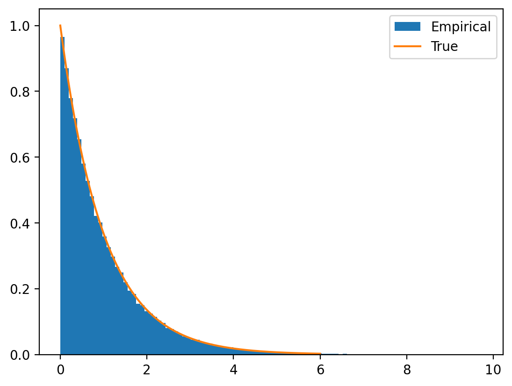

import matplotlib.pyplot as plt
import numpy as np
print(np.__version__)
import torch
import torch.nn as nn
import pandas as pd
# Retina mode
%matplotlib inline
%config InlineBackend.figure_format = 'retina'2.2.4cumulative distribution function, CDF, inverse transform sampling, random number generation, categorical distribution, exponential distribution, gaussian distribution
—author: Nipun Batratitle: Cumulative Distribution Functions and Inverse Samplingdescription: A comprehensive exploration of cumulative distribution functions (CDFs), their properties, and applications in random number generation through inverse transform sampling. Covers both discrete and continuous distributions with practical implementations.categories: - Probability - Statistics - Mathematics - Random Variables - Distributionskeywords: - cumulative distribution function - CDF - inverse transform sampling - random number generation - categorical distribution - exponential distribution - gaussian distributiondate: ’2025-03-06’badges: truetoc: true—
By the end of this notebook, you will understand:
The Cumulative Distribution Function (CDF) is one of the most important concepts in probability theory. While the Probability Mass Function (PMF) tells us the probability of specific values, the CDF tells us the probability of getting values up to a certain point.
For a random variable \(X\), the CDF is defined as:
\[F_X(x) = P(X \leq x)\]
This simple definition has profound implications: - Monotonic: CDFs are always non-decreasing - Bounded: CDFs range from 0 to 1 - Right-continuous: CDFs are continuous from the right - Universal: Every random variable has a CDF
CDFs are crucial because they: 1. Provide complete probabilistic information about a random variable 2. Enable random number generation through inverse sampling 3. Allow easy probability calculations for ranges of values 4. Form the basis for statistical tests and confidence intervals 5. Bridge discrete and continuous probability theory
One of the most elegant applications of CDFs is the inverse transform sampling method. The key insight is beautifully simple:
If \(U\) is uniform on \([0,1]\) and \(F\) is a CDF, then \(F^{-1}(U)\) has distribution \(F\).
This allows us to generate samples from any distribution using just uniform random numbers and the inverse CDF!
Let’s explore these concepts through practical implementations and visualizations.
We’ll use PyTorch for distributions, NumPy for numerical operations, and Matplotlib for visualizations:
Let’s implement inverse transform sampling for a categorical distribution. This will demonstrate the core concepts before moving to continuous distributions.
We have a categorical distribution with 4 outcomes and probabilities: - Outcome 1: \(P(X = 1) = 0.1\) - Outcome 2: \(P(X = 2) = 0.2\) - Outcome 3: \(P(X = 3) = 0.3\) - Outcome 4: \(P(X = 4) = 0.4\)
import matplotlib.pyplot as plt
import numpy as np
print(np.__version__)
import torch
import torch.nn as nn
import pandas as pd
# Retina mode
%matplotlib inline
%config InlineBackend.figure_format = 'retina'2.2.4The CDF is the cumulative sum of probabilities:
The CDF values are [0.1, 0.3, 0.6, 1.0], representing cumulative probabilities up to each outcome.
The inverse transform method works as follows: 1. Generate a uniform random number \(u \in [0,1]\) 2. Find the smallest \(x\) such that \(F(x) \geq u\) 3. Return \(x\) as the sample
Let’s implement this step by step:
For a uniform sample of 0.6947, we find the first CDF value ≥ 0.6947, which corresponds to outcome 4.
PyTorch provides searchsorted for efficient inverse CDF lookup:
We can generate many samples at once using vectorization:
Let’s validate our implementation by comparing the empirical frequencies with the theoretical probabilities:
The red dashed lines show the theoretical probabilities. As expected, our generated samples closely match the theoretical distribution!
Now let’s apply inverse transform sampling to a continuous distribution. The exponential distribution is perfect because its inverse CDF has a closed form.
For an exponential distribution with rate parameter \(\lambda\): - PDF: \(f(x) = \lambda e^{-\lambda x}\) for \(x \geq 0\) - CDF: \(F(x) = 1 - e^{-\lambda x}\) for \(x \geq 0\) - Inverse CDF: \(F^{-1}(u) = -\frac{\ln(1-u)}{\lambda}\)
probs = torch.tensor([0.1, 0.2, 0.3, 0.4])
print(probs)tensor([0.1000, 0.2000, 0.3000, 0.4000])The histogram shows our generated samples closely match the theoretical exponential PDF (orange line)!
Many probability distributions in PyTorch provide an icdf (inverse CDF) method. Let’s create a general framework:
Let’s apply our framework to generate samples from a standard normal distribution:
unif = torch.distributions.uniform.Uniform(0, 1)
print(unif.sample())tensor(0.3224)Perfect! Our inverse transform sampling generates samples that match the standard normal distribution.
Let’s examine the icdf method more closely to understand what we’re using:
cum_sum_prob = torch.cumsum(probs, dim=0)
print(cum_sum_prob)tensor([0.1000, 0.3000, 0.6000, 1.0000])The icdf method is exactly what we need for inverse transform sampling - it takes probabilities and returns the corresponding quantiles.
In this notebook, we’ve explored the powerful connection between CDFs and random number generation:
The inverse transform method works because: - If \(U \sim \text{Uniform}(0,1)\) - And \(F\) is any CDF - Then \(X = F^{-1}(U)\) has distribution \(F\)
This is a fundamental result in probability theory!
Inverse transform sampling is used in: - Monte Carlo simulations for complex probability models - Bayesian inference for sampling from posterior distributions - Computer graphics for realistic random phenomena - Financial modeling for risk assessment and pricing - Machine learning for generative models and data augmentation
Advantages: - Mathematically exact (no approximation errors) - Works for any distribution with known inverse CDF - Efficient for single samples - Preserves correlations in multivariate extensions
Limitations: - Requires analytical or numerical inverse CDF - Can be computationally expensive for complex distributions - Some distributions don’t have closed-form inverse CDFs
Now that you understand CDFs and inverse sampling, you’re ready to explore: - Joint distributions and multivariate CDFs - Conditional distributions and their CDFs - Order statistics and their relationship to CDFs - Advanced sampling methods like rejection sampling and MCMC
The CDF is truly one of the most versatile tools in probability and statistics!
symbols = torch.tensor([1, 2, 3, 4])
print(symbols)
sample = unif.sample()
print(sample)
if cum_sum_prob[0] > sample:
print(symbols[0])
elif cum_sum_prob[1] > sample:
print(symbols[1])
elif cum_sum_prob[2] > sample:
print(symbols[2])
else:
print(symbols[3])tensor([1, 2, 3, 4])
tensor(0.6947)
tensor(4)sample <= cum_sum_probtensor([False, False, False, True])symbols[sample < cum_sum_prob][0]tensor(4)### Even more efficient
index = torch.searchsorted(cum_sum_prob, sample)
print(symbols[index])tensor(4)### Vectorized
num_samples = 100000
unif_samples = unif.sample((num_samples,))
index = torch.searchsorted(cum_sum_prob, unif_samples)
our_samples = symbols[index]
print(our_samples)tensor([4, 4, 4, ..., 3, 4, 2])samples_series = pd.Series(our_samples)
samples_series_norm = samples_series.value_counts(normalize=True)
samples_series_norm.sort_index(inplace=True)
samples_series_norm.plot(kind='bar', rot=0)
for i in range(4):
plt.axhline(probs[i].item(), color='r', linestyle='--')
plt.ylim(0, 0.5)
### Generating samples from exponential distribution
rate = 1
exp = torch.distributions.exponential.Exponential(rate)
x_range = torch.linspace(0, 6, 1000)
y = exp.log_prob(x_range).exp()
plt.plot(x_range, y)def inv_cdf_exp(rate, u):
return -torch.log(1-u)/rateU = torch.distributions.uniform.Uniform(0, 1)
u_vec = U.sample((num_samples,))
x_vec = inv_cdf_exp(rate, u_vec)plt.hist(x_vec.numpy(), bins=100, density=True, label='Empirical')
plt.plot(x_range, y, label='True')
plt.legend()
## Generalised implementation when .icdf() is available
def inverse_cdf_sampling(distribution, sample_size=10000):
"""Performs inverse CDF sampling for a given torch distribution."""
U = torch.rand(sample_size) # Generate uniform samples
X = distribution.icdf(U) # Apply inverse CDF (quantile function)
return XX = torch.distributions.Normal(0, 1)
samples = inverse_cdf_sampling(X, 1000)### Use CDF function
our_dist = torch.distributions.Normal(0, 1)
unif_samples = inverse_cdf_sampling(our_dist, 1000)
plt.hist(samples.numpy(), bins=50, density=True)(array([0.00844681, 0. , 0.01689361, 0.00844682, 0.02534042,
0.02534042, 0.01689361, 0.02534042, 0.04223408, 0.11825541,
0.07602126, 0.15204252, 0.17738312, 0.15204252, 0.18582993,
0.22806378, 0.261851 , 0.21117016, 0.287192 , 0.31253184,
0.38010629, 0.41389352, 0.45612755, 0.40544671, 0.37166023,
0.43078713, 0.28719142, 0.3885531 , 0.32942545, 0.33787294,
0.34631907, 0.23651058, 0.20272336, 0.25340419, 0.18583012,
0.19427616, 0.143596 , 0.10136188, 0.11825505, 0.10980871,
0.08446789, 0.11825553, 0.05068094, 0.06757432, 0.00844682,
0.02534037, 0.01689365, 0.01689358, 0.01689365, 0.01689361]),
array([-2.97191405, -2.85352612, -2.73513818, -2.61675024, -2.49836254,
-2.3799746 , -2.26158667, -2.14319873, -2.02481079, -1.90642297,
-1.78803515, -1.66964722, -1.55125928, -1.43287146, -1.31448352,
-1.19609571, -1.07770777, -0.95931983, -0.84093189, -0.72254419,
-0.60415626, -0.48576832, -0.36738038, -0.24899244, -0.13060451,
-0.01221681, 0.10617113, 0.22455907, 0.34294701, 0.46133494,
0.57972264, 0.69811058, 0.81649852, 0.93488646, 1.05327439,
1.17166209, 1.29005027, 1.40843797, 1.52682567, 1.64521384,
1.76360154, 1.88198972, 2.00037742, 2.11876512, 2.23715329,
2.35554099, 2.47392917, 2.59231687, 2.71070504, 2.82909274,
2.94748068]),
<BarContainer object of 50 artists>)exp.icdf?Signature: exp.icdf(value) Docstring: Returns the inverse cumulative density/mass function evaluated at `value`. Args: value (Tensor): File: ~/base/lib/python3.12/site-packages/torch/distributions/exponential.py Type: method